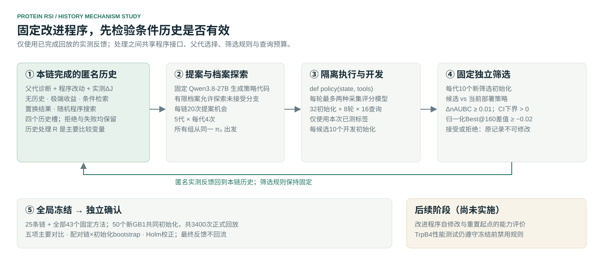

当前研究 · 总体进度
待核对本轮先检验策略执行和历史反馈机制，改进程序自修改属于下一阶段。
共同执行阶段
数值一致性验证
— / 105个起点 × 两种实现待核对固定对照开发
— / 43040个数值配置 + 3个领域适配待核对五组策略搜索
5 × 5条链每链20次提案机会未开始GB1正式评价
50个起点全部策略冻结后运行未开始工程验证、回放完成和方法有效性分别记录；只有完整的正式配对结果才能支持主要比较。
查看分阶段执行记录
全部实验任务
点击任务查看其处理变量。执行状态来自公开记录，未完成的性能指标保留“—”。
| 任务 / 方法 | 研究作用 | 开发设计 | 当前状态 | 正式评价 |
|---|
五组共享同一初始策略、程序接口、档案探索与接受规则。随机程序组不调用LLM，实际API和标签成本另行报告。
研究方案与共同协议
本阶段：固定改进程序背景与研究假设
历史记录应说明什么条件下的改动产生了什么实测结果。本轮检验条件检索是否比极端收益、无历史、置换结果及随机程序搜索更有效。
GB1使用历史实测适应度数据。Agent只使用本回放已测反馈，不能读取未测标签或继承跨回放序列标签缓存。
搜索与独立筛选
5组 × 5链，每链5代 × 4次提案机会。候选在10个开发初始化上评价，再在10个新的筛选初始化上与当前部署策略比较。
接受条件：ΔnAUBC ≥ 0.01、配对95%区间下界 > 0、归一化Best@160差值 ≥ −0.02；拒绝与失败记录完整保留。
π为实际执行的策略，R是本轮比较的历史处理，G使用固定Qwen3.8-27B；J为nAUBC。当前父代诊断及固定筛选始终保持真实。

查看43项固定基线与精确实验指标
| 固定方法 | 采集函数 / 候选范围 | 配置数 |
|---|---|---|
| 随机采样 | 随机未测候选 | 1 |
| 线性、GP、MLP5、加性/成对/混合上位性模型 | Greedy / UCB(β=0.5) / EI × 全局 / 局部候选 | 36 |
| MLP5 Thompson sampling | 全局 / 局部候选 | 2 |
| MLP5与成对上位性模型 | 采集排序等权混合 | 1 |
| ALDE适配 | DNN Greedy、DNN Thompson sampling | 2 |
| SSMuLA适配 | Boosting Greedy | 1 |
局部候选为登记的elite_hamming_1范围；每轮最多两种采集评分模型，共同线性交叉验证诊断单独计时。领域方法按本项目协议适配，不混用原论文分数。
正式比较context相对extreme、none、permuted、random及开发选择的强固定方法。20,000次配对链×初始化bootstrap、Holm五比较校正（α=0.05），同时报告效应、95%区间、终点约束和成本。
正式评价包含25条搜索链和全部43项固定方法，共68 × 50 = 3,400次回放。TrpB4本阶段不做性能测试；初始32、8轮各16、总预算160不变。

GB1 · 正式结果
尚未完成正式评价统一使用新初始化和配对比较。前期研究结果保存在独立页面，不作为本轮成绩。
| 方法 | 链 × 初始化 | nAUBC | 归一化Best@160 | ΔnAUBC [95% CI] |
|---|---|---|---|---|
| 无历史 | 5 × 50 | — | — | — |
| 极端收益 | 5 × 50 | — | — | — |
| 条件检索 | 5 × 50 | — | — | — |
| 置换结果 | 5 × 50 | — | — | — |
| 随机程序搜索 | 5 × 50 | — | — | — |
| 开发选择的强固定方法 | 1 × 50 | — | — | 参照 |
强固定方法按43项开发均值及预先登记的并列规则选择，最终同时报告全部固定方法与所有搜索链。正式成绩不用于重新选择方法。
结果反馈后如何修订
有历史胜无历史，不能单独证明条件检索有效；真实结果不胜置换结果，不能支持所提出的历史关联机制。各组若不胜强固定方法，应修订策略、搜索或历史设计，再使用新登记和新初始化检验。
本轮固定改进程序。其自修改与旧/新版能力比较是下一阶段，须从相同初始策略重新搜索、在未用任务上确认，不能用部署策略提高替代元能力证据。
研究材料与记录
运行费用与原始公开计数
未取得有效计数前，不推算费用或执行次数。
下载公开计数 JSON